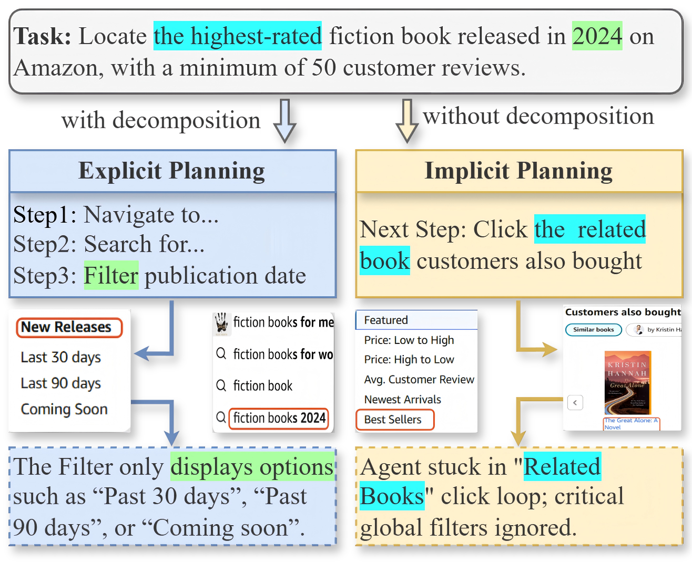
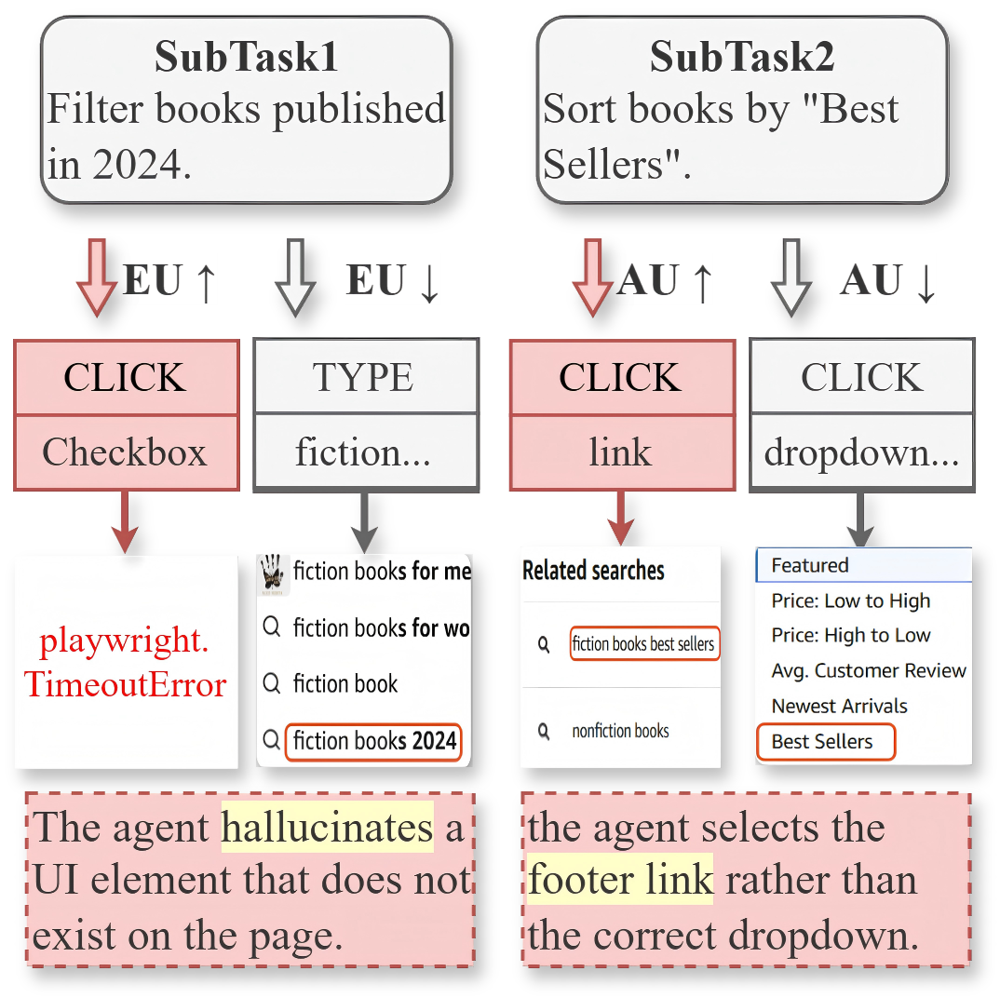

![WebUncertainty framework diagram: left half is Task Uncertainty-Driven Adaptive Planning (Analysis Agent estimates task uncertainty, Planning Agent switches between explicit multi-step and implicit next-step planning); right half is Action Uncertainty-Driven MCTS Reasoning (Reasoning Agent proposes actions with confidence scores, ConActU derives EU/AU, an Action Uncertainty check routes the reward through strict penalty, relaxed penalty, normal, or regenerate, an Evaluation Agent scores the result, and values are backpropagated through Selection, Expansion, Simulation and Backpropagation).](assets/images/framework.png)
Dual-level uncertainty driven planning and reasoning for autonomous web agents — an adaptive planner that switches between explicit and implicit decomposition, paired with an uncertainty-aware Monte Carlo tree search that tells "I don't know this page" apart from "there are several valid options."
1Hefei University of Technology · 2Academy of Cyber, CETC Group · *Corresponding author: zenglin.shi@hfut.edu.cn
Abstract
Recent advancements in large language models (LLMs) have empowered autonomous web agents to execute natural language instructions directly on real-world webpages. However, existing agents often struggle with complex tasks involving dynamic interactions and long-horizon execution due to rigid planning strategies and hallucination-prone reasoning. To address these limitations, we propose WebUncertainty, a novel autonomous agent framework designed to tackle dual-level uncertainty in planning and reasoning. Specifically, we design a Task Uncertainty-Driven Adaptive Planning Mechanism that adaptively selects planning modes to navigate unknown environments. Furthermore, we introduce an Action Uncertainty-Driven Monte Carlo tree search (MCTS) Reasoning Mechanism. This mechanism incorporates the Confidence-induced Action Uncertainty (ConActU) strategy to quantify both aleatoric uncertainty (AU) and epistemic uncertainty (EU), thereby optimizing the search process and guiding robust decision-making. Experimental results on the WebArena and WebVoyager benchmarks demonstrate that WebUncertainty achieves superior performance compared to state-of-the-art baselines.
Motivation
A one-shot plan drifts out of date the moment the page does something unexpected; a step-by-step plan with no lookahead wanders into local optima. Separately, an agent that just executes whatever action an LLM proposes has no way to tell a page it doesn't understand from a page with several equally defensible next moves — so it treats both as the same kind of failure.


Method
The framework keeps the two failure modes apart end to end: a planning stage decides how far ahead to commit before every step, and a reasoning stage decides, for the chosen subgoal, whether a proposed action is trustworthy enough to take. (See the framework figure near the top of the page for the full picture.)
u_plan ∈ [0,1].u_plan ≤ δ (a familiar page), an Explicit Planner decomposes the remaining goal into a full step sequence and the agent commits to the first step — favoring long-horizon coherence.u_plan > δ (an unfamiliar or shifting page), an Implicit Planner proposes only the immediate next subgoal — favoring flexibility over commitment.δ = 0.4.EU = 1 − mean(confidence) — does the model know this page at all — and aleatoric uncertainty AU = normalized_entropy × mean(confidence) — are several options equally defensible.τ is accepted outright; otherwise the EU/AU quadrant below decides how the failure is handled. τ = 6 (of 10) works best empirically.The same low score means something different depending on why it's low — WebUncertainty treats a confused model differently from a genuinely ambiguous page.
The model doesn't recognize the page and can't settle on an option. Prune this path hard so search never returns to it.
Confident-looking but ungrounded — a plausible sign of a hallucinated element. Back up and explore the parent's other children.
The model knows the page; it just has several defensible options. Keep the raw score and let search compare siblings.
A single, confident action that still failed — a likely deterministic error. Ask the reasoning agent for a fresh candidate set at this node.
Results
Every method below is run independently on two backbones — GPT‑4‑Turbo and Qwen‑Max — so architecture gains can be told apart from raw model capability.
Success rate (%), text-only accessibility-tree observations. Best result per backbone group in bold.
| Agent | Backbone | SR | Shop | Admin | GitLab | Map | Multi | |
|---|---|---|---|---|---|---|---|---|
| WebArena-rep | GPT-4-Turbo | 16.5 | 16.6 | 15.9 | 10.0 | 22.9 | 21.7 | 16.7 |
| Browser Use | GPT-4-Turbo | 16.9 | 15.0 | 17.6 | 10.6 | 23.9 | 23.6 | 14.6 |
| Agent-E | GPT-4-Turbo | 13.9 | 13.4 | 10.4 | 11.1 | 19.3 | 20.8 | 12.5 |
| WebPilot | GPT-4-Turbo | 37.6 | 41.2 | 43.4 | 33.3 | 37.6 | 37.7 | 16.7 |
| AgentOccam | GPT-4-Turbo | 43.1 | 40.6 | 45.6 | 37.8 | 46.8 | 61.3 | 14.6 |
| WebUncertainty | GPT-4-Turbo | 46.9 | 47.6 | 49.5 | 40.0 | 45.9 | 67.0 | 18.8 |
| Agent-E | Qwen-Max | 14.2 | 12.3 | 9.9 | 12.8 | 17.4 | 23.6 | 14.6 |
| WebPilot | Qwen-Max | 34.5 | 40.1 | 33.0 | 29.4 | 40.4 | 36.8 | 18.8 |
| AgentOccam | Qwen-Max | 38.4 | 41.2 | 42.9 | 33.3 | 27.5 | 55.7 | 16.7 |
| WebUncertainty | Qwen-Max | 40.1 | 42.8 | 38.5 | 37.8 | 38.5 | 57.5 | 10.4 |
WebArena-rep and Browser Use were not run on the Qwen-Max backbone in this study.
Overall success rate (%) by backbone. Hover a bar, or open “show exact values” for the numbers.
Qwen-Max backbone. Removing action-uncertainty awareness (reverting to plain MCTS) costs the most on both benchmarks.
Qwen-Max, WebVoyager. Up and to the left is better: higher success rate for less inference time per task.
Qwen-Max, WebVoyager. The framework stays above the strongest baseline (AgentOccam, 58.9%) across a wide range of both thresholds.
Limitations
δ and τ are set empirically and interact with how well-calibrated the backbone LLM is. Fixed values may switch planning modes badly on unusually volatile sites; adaptive tuning is future work.Citation
Published in Findings of the Association for Computational Linguistics: ACL 2026.
@inproceedings{zhang-etal-2026-webuncertainty,
title = {WebUncertainty: Dual-Level Uncertainty Driven Planning and Reasoning For Autonomous Web Agent},
author = {Zhang, Lingfeng and Sun, Yongan and Hu, Jinpeng and Ma, Hui and Yang, Ying and Liu, Kuien and Shi, Zenglin and Wang, Meng},
booktitle = {Findings of the Association for Computational Linguistics: ACL 2026},
year = {2026},
pages = {13072--13082},
url = {https://aclanthology.org/2026.findings-acl.637/}
}